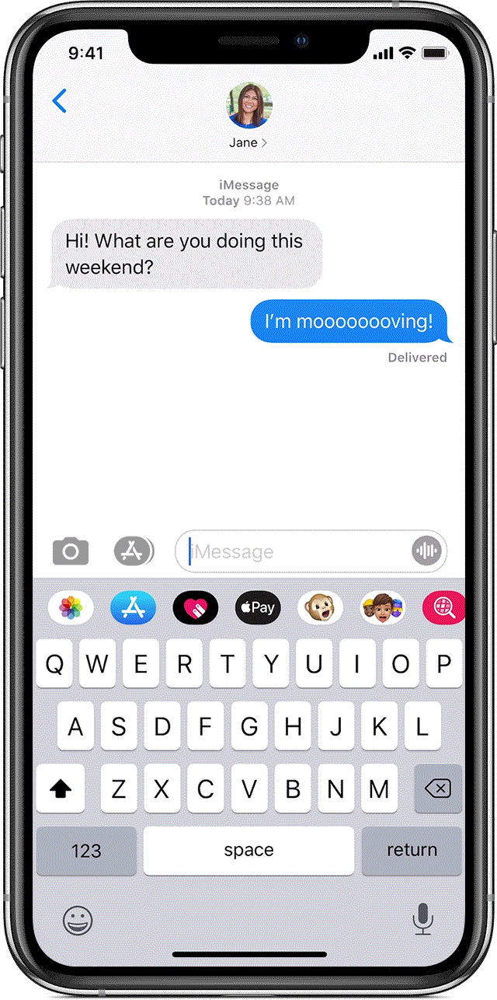

This is a text message on the first phone model I ever owned, not my actual phone though! The text you see here is just the barest of information, now there are a few options for formatting a text message like this but it is limited or difficult.
HTML is a little like this it's mostly just the information but with limited formatting. CSS can take the same information but provide a much richer level of style formatting and experience, such as using a modern phone to do basically the same thing!
A control flow and loop is a way for a computer to accomplish a task with measurements and feedback to measure success and guide the computer to an outcome. Such as making a cup of coffee!
The DOM is a way to structure elements within the page so we can work with them in an organised way and navigate between the ones we want to manipulate
So in the above image we can easily access and work with adding an option to the above form by navigating to
Window >> Document >> Form >> Select
Then add the option as required.
Here is an old fashioned rolodex, which is a way to store business cards usually in alphabetical order, if you wanted to get to a card for someone with a name starting with W you would have to wind around until you reached W.
This is the only way to navigate between or work with the way this information is organised
If these were your customers say you could organise them as objects, what is the difference? Well you could create categories and then know which clients are in Tech or Forestry. You could organise them by who owes money or who is waiting on an order. Information stored simply as an array doesn't easily give you options for creating or adding this functionality.
In the above example I talked about making a cup of coffee, a function is like a shortcut to do something that is often repeated but is only actually written explicitly once.
Imagine if you completely forgot how to make a cup of coffee, or where you lived and how to get there so had to work it out from scratch everytime.
A function is like the way your mind already knows all the steps involved to make a cup of coffee or how to get home, you can do this and often when you get home you can hardly remember driving there. A function is like this shortcut for a computer.